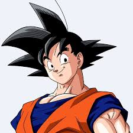

Son Goku
Data de Nascimento: 13/09/2001
Rua Carolina, Nº 35
Bairro Amarante
+55 084 99657-4618
Kkroto_Berus@gmail.com
Experiência
Janeiro 2019 - Atual
Garçon
Bar da TCHI-TCHI
- Servia a comida
- Anotava os pedidos
Outubro 2018
Lutador do Universo 7
Mundo do Vazio
- Empurrava competidores para fora da Arena
- Me tranforma no Instinto Superior
Educação
- Fui treinado pelo meu avô
- Fui treinado pelo pelo mestre Karin
- Fui treinado pelo Pelo mestre Kame
- Fui treinado pelo senhor Kaioh
- Fui treinado pelo Whis
- Não Frequentei escolas
Linguas
- Todas que meus dubladores conseguirem
Aptidões e competências pessoais
- Me tranformo em super sayajin do 1 ao 3
- Me tranformo em super sayajin God
- Me tranformo em super sayajin Blue
- Conseigo realizar o kayoken